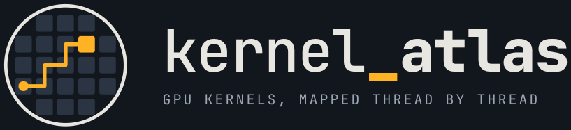
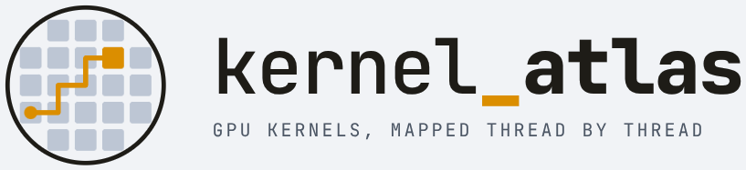

Each model page opens with its architecture, drawn like the figures of Attention Is All You Need, then shows the GGUF graph with every step named by its kernel.
One layer, kernel by kernel. Amber notes are steps with their own page; tinted boxes are matrix products, where the time goes.
Coloured dots show which engines run the kernel; the filter above dims the rest.
Used on every page.